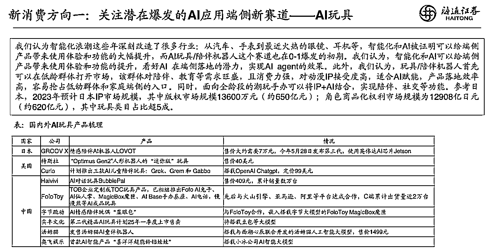

来源：https://wandouyin.feishu.cn/docx/KJLhdMlPdoVgV2x1188cd3Wxn8b
大家好，我是刘笑长，喜欢笑，做增长。
今天就是2025年2月14日西方情人节了，你的礼物准备好了么？
昨天脑洞大开，突然想到一个产品：AI智能体镜子，一个长了眼睛（摄像头）和脑子（Agent）的镜子。
一个可以给你提供化妆建议、穿搭建议的镜子，一个嵌入了Deepseek R1和豆包视觉理解大模型的镜子，一个拥有多Agent智能体的镜子，一个陪你聊天提供情绪价值的镜子，一个洞察你小心思给你鼓励和方案的镜子....
本文是沿着上述思路的灵感涌现，关于脑洞来源，关于技术可行性，关于落地场景，关于商业模式......
随着Deepseek的春节爆火，铺天盖地的信息席卷而来，我也像多数人一样，寻找其中孕育的新机会～

正如上图所示，多份证券报告中提到了AI+硬件的机会，尤其是AI玩具。在2024年，我也购买DIY试用了一些智能硬件，感觉很有趣，受限于当时的大模型使用限制，还是差一些意思，但随着大模型技术的成熟和开放，一些智能体玩具开始逐步进入大众视野～
以下报告仅仅辅助说明和理解本文AI应用端侧（AI玩具）赛道的机会和挑战，不构成任何投资建议。
2024年12月份，豆包发布了视觉理解大模型，并上线了火山引擎平台，开发者可以通过API调用使用。
通过上述视频，我们可以看到大模型在之前的能听（耳朵）会说（口）有脑子（大模型）的基础上，终于长了眼睛。
这个视频我看了N遍，我看到了很多行业的应用场景将被改变：在线教育、广告、电商、游戏等等～
借助火山引擎提供的API，通过大模型+提示词+Agent+知识库等等，开发出各种垂类场景下的App，重新定义各种应用场景下的交互方式，是我看到的新机会。
天下大势，分久必合，合久必分。江湖如此，App亦如此。
目前，智能眼镜很火，也很落地。
智能眼镜，带你看见世界：更大的世界，更丰富的世界～
AI智能体镜子，让你看见自己：更美的自己，更真实的自己～
一个向外看，一个向内看。
一项成熟的技术，可以迁移到很多场景下；随着智能眼镜的广泛普及，智能眼镜的内核迁移至镜子领域，不重复造轮子，只需要基于不同的知识库定制场景下的工作流和Agent，优化用户使用体验，即可开创一个新的消费赛道。
一年当中，会诞生出很多送礼场景，而中国自古至今，都讲究“礼”尚往来、“礼”多人不怪。在刚刚过去的春节，大家应该都深有感触。
很多情况下，其实我们还有一个纠结点？送点什么礼🎁呢？送什么礼才能送到心坎上呢？
“不能年年送玫瑰花吧？”
“要不你去问问Deepseek R1？”
其实，对于给女生送礼，化妆品、包、鲜花、金银首饰、现金红包、衣服等等，送一两次还可以，送多了，就没啥新意了～
但如果你送一个 稀缺的、自己DIY的、包含最新大模型、能听会说还会看的AI智能体玩具，就不一样了～
于是，我想到了洗漱打扮的必备品：镜子。
因为据我观察和通过大量的数据报告分析得出，对于女性用户，除了手机外，镜子（梳妆台）是居家场景下很典型和重要的场景。
按照互联网行话，这一场景产品具备以下优势：高频（一天至少2次）、高活跃（平均每日活跃时长>1H+）、高留存；甚至可以变成AI大模型进入家庭场景的重要"入口".......
当我想到AI智能体镜子后，我在想，这个镜子的价值和意义是什么呢？Ta在哪些场景下可以解决哪些问题呢？
试想以下场景：
其实，如果深想下去，还有很多种细分场景，不一一列举了～
自古以来，爱美之心，人皆有之，如果我们把“镜子”定义为 让自己变得更好的镜子
智能眼镜让你看见更广阔的世界，智能镜子让你看见更好的自己
随着镜子的多轮沟通对话，镜子会成为你的闺蜜，也会成为另一个你
1、豆包视觉模型大模型：带你看世界，也看自己
2、Coze智能体：Agent as API
3、Deepseek R1 ：语音、图像处理沟通大模型
4、硬件：整合资源，不重复造轮子
AI智能体镜子自带一个开关，开启后，自动链接大模型：接入豆包视觉大模型，根据用户的状态（图像）和语言（语音）分析调用那个Coze Agent处理，不同的Agent自带不同的知识库并配不同的提示词，在Agent 工作流上接入Deepseek R1 大模型，去分析、推理、回应用户。多模型协作，多Agent协作，多知识库协作～
以上仅仅为部分思路，还未形成MVP。
Ta，是一个可以提升转化率的AI智能体镜子
除了化妆场景，目前使用deepseek算命和身心灵疗愈赛道也很火爆
其实，当你照镜子时，如果镜子也是会看面相呢？
我想如果deepseek 算的是准的，那么结合面相、手相，实时提供给你穿搭建议，是不是也会优化你的风水呢？
关于身心灵赛道，当你买了一个镜子，这就相当于请了一个身心灵的家教啊～
对了，每天晚上，你还可以对着镜子的自己，进行或修行或祈祷或忏悔或表白或～
当然，如果你愿意，还可以把镜子里的自己换成任一偶像，如观音菩萨、释迦牟尼～
除了居家场景，还有美业场景
例如理发场景，如果在理发前，就可以看到烫染等流程后的效果图，是不是可以提高 “烫染”这一服务的转化率呢？
上述好像并不难实现吧！就是让镜子捕获一张自己的照片，进行垫图，然后提示词或工作流进行处理出图～
人因为看见而相信，因为相信而买单！
买了一个镜子，相当于买了一个提升转化率的员工～
如果升单转化率提升20%，你可以自行算一下利润空间和投入成本，算一下ROI
很多情况下，衣服售卖时，用户欠缺的是一个“买它”的理由和决心～
如果你穿上这件衣服，显示在镜子里的是你穿上这件衣服在各种场合下的图片，你会不会陷入场景营造的氛围中呢？
譬如：高档写字楼中；譬如：沙滩上；譬如：谈判桌上～
这会不会进一步的提升衣服售卖的转化率呢？
衣服如此，包等等，其实都如此
“相信我，现在就买它！”
列举一个健身的例子吧！
减肥：先看见，再相信。
如果一个健身教练对着镜子里的你说：“这就是30天后的你”，
你会不会看到镜子里的身材而心动，会不会冲动去办卡？
如果AI智能镜子当场给你列出一个30天计划，并且声情并茂的夸你，你会不会冲动一下呢？
“你可以不相信教练，但你怎么能不相信Deepseek？”
其实医美场景也是如此，人因为看见而相信，因为相信而买单！
生财仙镜
对了，AI智能体镜子不仅可以让你变得更好，还可以让你觉醒，和你一起搞钱～
Ta，不仅可以是你的闺蜜，还可以是你生财路上的智囊团～
看着你一天一天变的更好！
AI智能体镜子，可以定制知识库、工作流，无论个人场景还是商业场景。
一个让你变美变富的镜子，一个可以提升“现场转化率”的镜子🪞～
诸如场景还有很多很多，Ta，不止可以提升转化率，还可以让你看到很多人改变后的未来！
1、个人送礼场景：作为情人节礼物
2、与化妆品品牌合作：如神仙水
3、与奢侈品牌合作：只送不卖
4、付费订阅逻辑
其实，很多AI玩具，首选场景是送礼场景，提升关系质量；其次是和大品牌合作，提升大品牌的用户粘性；再次是普及到大众消费场景，提升转化率。出于成本考虑，也是一个稳健扩张可持续的路径～
爱会创造奇迹，用点心，也许就会发现一个新的商业机会。
关注一类人群的一个场景，结合最先进的新质生产力，也许会诞生一个新的品类。
AI不仅可以提升效率，还可以提升效果，而提升转化率，就是在提升效果。
随着Deepseek的爆火，犹如当初“电”的出现，一个新的时代已经开启！
这是一个最好的时代，原有的产品体系正在陆续的被瓦解，新产品等着我们去创造，这正是我们的机会～
当生产力过剩后，创意和想象力将变得弥足珍贵，因为也许在某一天就改变了世界某个场景下的交互方式。
以上是一个脑洞，也可能存在很多商业漏洞、逻辑错误的地方，欢迎一起沟通探讨！
祝福大家2025情人节快乐！愿天下有情人终成眷属！
感谢生财有术，一起生财有术！